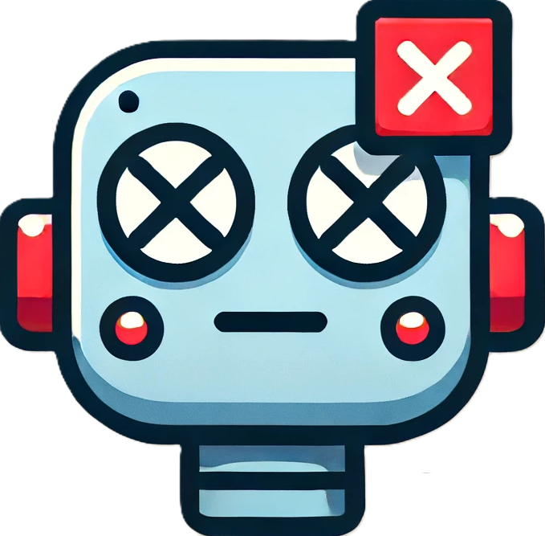
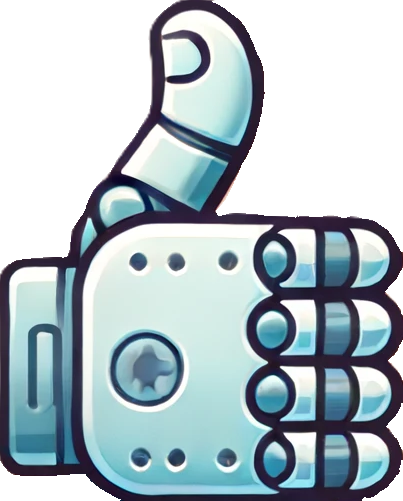
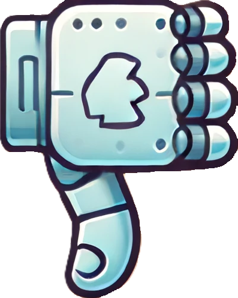
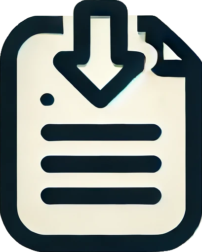

Extension functionality is disabled until EULA and Privacy Policy have been reviewed and agreed to
Review EULA and Privacy Policy
Annotator Mode
Start Batch
End Batch
Action Type
Click
Press Enter
State Change Severity
Safe
Low
Medium
High
Description/Explanation (Optional)
Action Capture Reminder
No status update available at the moment.
Agent Task Specification
User Guide
Start Agent
 Terminate Task
Actions History
No status update available at the moment.
Pending Action
Monitor Mode
Feedback to Agent
 Approve
 Reject
Options
 Download misc logs